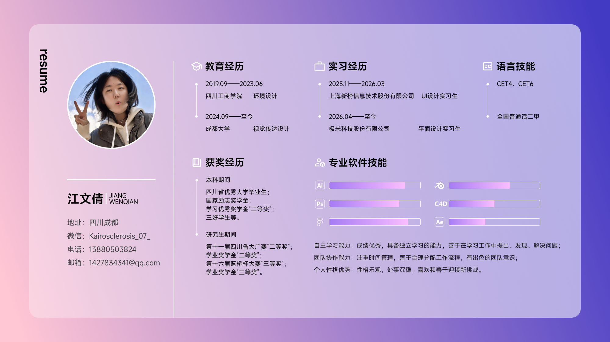

极米科技股份有限公司
平面设计实习生
参与投影新品海内外营销设计，覆盖小红书、微信公众号、海外社媒、Amazon A+、EDM 与线下活动物料。
ABOUT / 关于我
JIANG WENQIAN
VISUAL DESIGNER
BASED IN CHENGDU
OPEN TO OPPORTUNITIES
 HELLO!
HELLO!01 / INTRO
成都大学视觉传达设计硕士研究生，一名关注信息层级、品牌表达与数字体验的视觉设计师。
我的实践横跨 UI / Web、品牌营销视觉、海报、文创、3D 与动效。实习经历让我熟悉真实业务中的协作、快速迭代与多渠道适配；学校项目则给我空间继续研究传统文化与实验视觉。
下载完整简历 PDF02 / EXPERIENCE
平面设计实习生
参与投影新品海内外营销设计，覆盖小红书、微信公众号、海外社媒、Amazon A+、EDM 与线下活动物料。
UI 设计实习生
参与网页端、移动端产品 UI 与视觉体验优化，并配合运营完成落地页、Banner、榜单与海报。
03 / EDUCATION
新媒体艺术设计实践、图像及符号研究、广告设计实践。
四川省大学生广告艺术大赛二等奖 · 学业奖学金二等奖景观设计与规划、设计色彩、图案基础。
四川省优秀大学毕业生 · 国家励志奖学金04 / PROFILE MAP
教育、实习、奖项与软件能力的视觉化信息总览。

05 / SKILLS